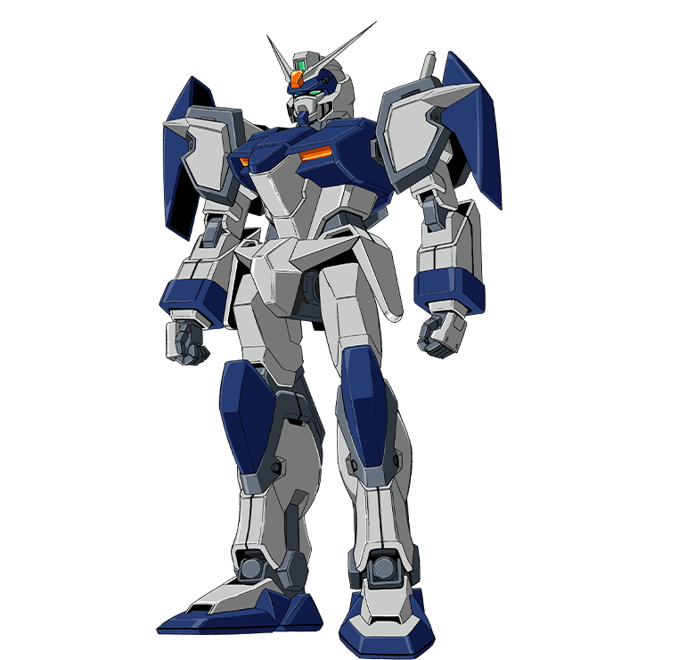
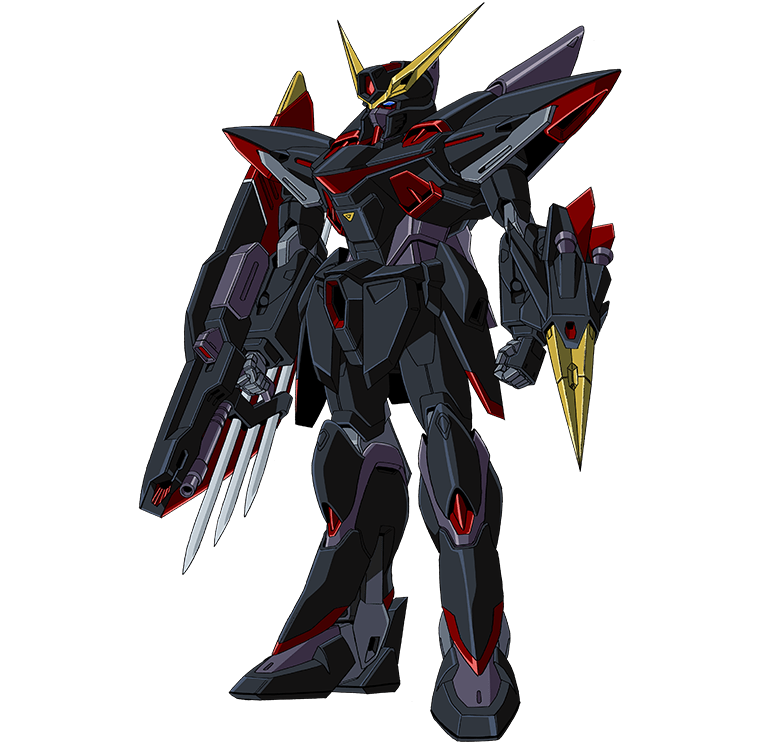

GAT-X105 ストライクガンダム
スタンダードな中・近距離宇宙戦仕様、実剣を装備した近接戦闘仕様、長距離砲を装備した砲撃戦仕様の3タイプに兵器を換装できるオールマイティな機体。
キラが搭乗。
GAT-X303 イージスガンダム
宇宙、空中での高速戦闘能力に優れた機体。
大きな特徴はMAへの変形能力で、他の4機のガンダムとはフレーム構造が根本的に異なっている。
アスランが搭乗。
GAT-X102 デュエルガンダム
汎用性の高いオーソドックスな機体で、ビームサーベルやライフルなどベーシックな武装を持つ。
後に、アサルトシュラウド装着タイプへ改修される。
イザークが搭乗。

GAT-X103 バスターガンダム
遠距離の重砲撃戦を主に追求した機体。
リニアレールガンと高エネルギーライフルを各一門装備し、敵の射程外から目標を攻撃することができる。
ディアッカが搭乗。
GAT-X207 ブリッツガンダム
動きの素早さを主に追求した機体で、地上における近接格闘戦を想定して設計をしている。
また一定時間、機体を透明にし、レーダーにも反応しない特殊装備をもっている。
ニコルが搭乗。